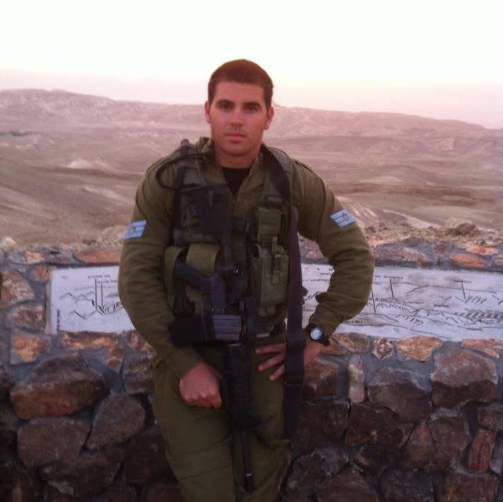
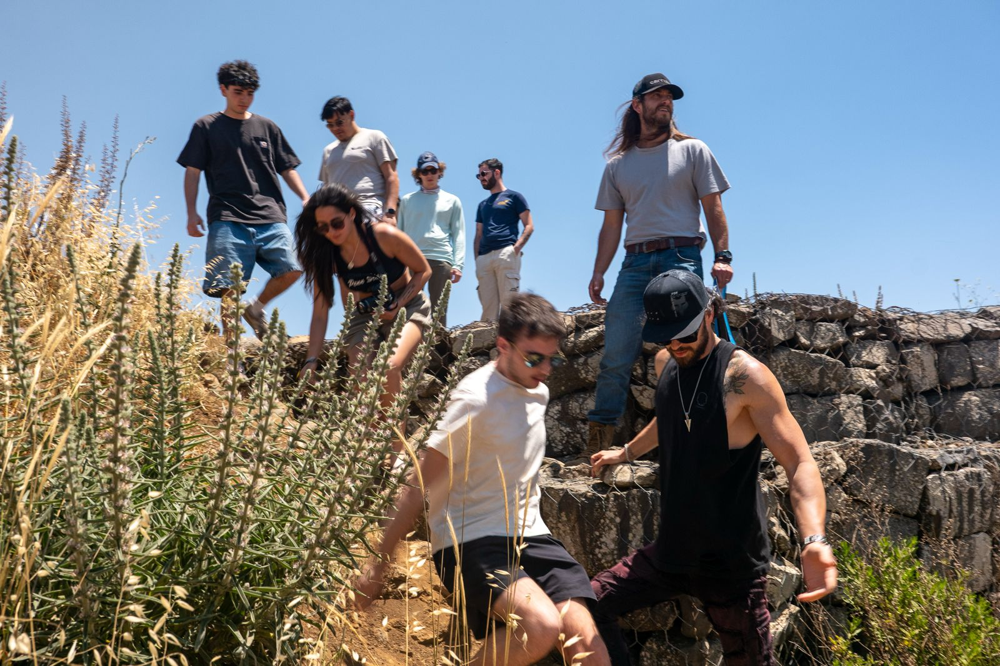
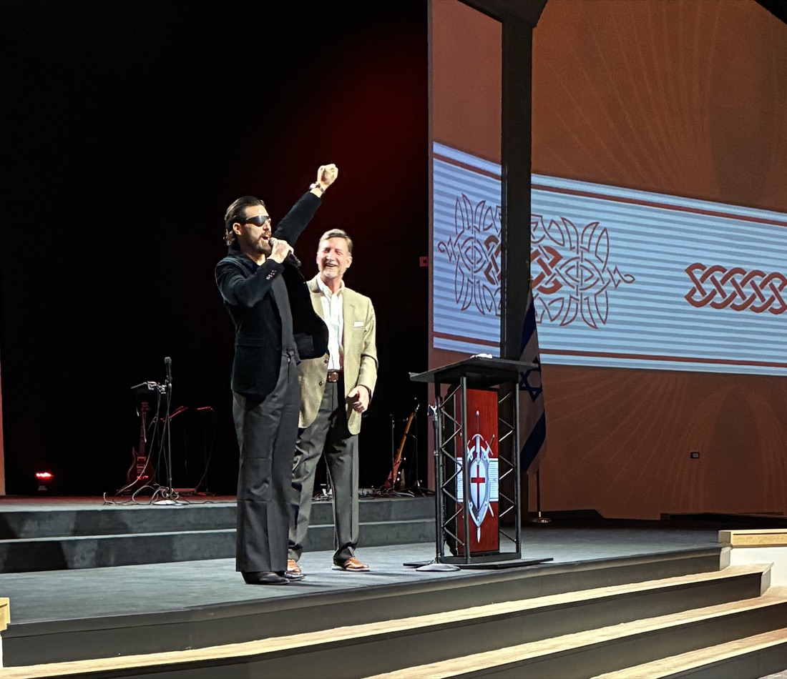

Enrico Omri Ravenna
Jewish Communal Leader
Executive Director · Jewish Federation of Arkansas
"Where there is a possibility,
there's a responsibility"
Jewish Communal Leader
Executive Director · Jewish Federation of Arkansas
"Where there is a possibility,
there's a responsibility"
The Story
01 — Soldier

I was born in Israel. I served in the IDF and was honorably discharged as a First Sergeant. That service is where I learned what accountability looks like when the stakes are real.
Everything I have built since starts there.
The Thread That Runs Through It
"My grandparents survived the Holocaust because a Catholic priest hid them from the Nazis."
That is the reason I sit across the table from pastors and legislators and neighbors who do not share my faith. That is why "where there is a possibility, there's a responsibility" is not a bumper sticker. It is the only honest response to the inheritance I carry.
02 — Builder

I came to the United States and started where the whole community was. At the Israeli American Council in Atlanta, I served as Activism Manager for the Southeast — mobilizing Jewish identity and civic engagement across an entire region, working with donors, organizers, and leaders across every demographic, not a single population.
Then I deliberately narrowed. As Midwest Regional Director and Associate Director of Israel Trips at Maccabee Task Force, I went deep into campuses — leading students to Israel, training the next generation in advocacy and interpersonal leadership, building from the ground up. I graduated Cum Laude in Political Science from Georgia State University. Mission and profession became the same thing.
03 — Leader
Today I lead the Jewish Federation of Arkansas. A lean team. An outsized mission. In under two years we tripled programming, rebuilt a dormant donor base, forged security partnerships across law enforcement and government, and put Arkansas on the national Jewish communal map.
The community is small. The stakes are not.

Areas I Work In
Community Security
Emergency protocols, government grant acquisition, and security infrastructure built before something happens, not scrambled together after.
Interfaith Coalitions
Durable relationships with pastors, priests, mosques, and legislators that outlast any single program or administration.
Fundraising & Development
Rebuilding donor trust from scratch, re-engaging lapsed supporters, and finding net-new funders. Starting from a cold list with no prior pipeline.
Next-Gen Leadership
Identifying and placing emerging Jewish leaders in staff, board, and national roles. People who had never considered this path as available to them.
Israel Advocacy
Public Jewish presence, Israel education, Holocaust remembrance, and advocacy in rooms where our community is rarely represented but always discussed.
Organizational Turnaround
Coming into a community that's falling behind and building it back. Culture, governance, operations. Making a small team punch above its weight.
Who I've Walked With
institutional security partnerships built and maintained — with the Secure Community Network, the FBI, the Little Rock Police Department, and the Arkansas state legislature. Relationships, not just protocols.
Within 30 minutes of a mass shooting at a Jewish congregation in Michigan, I had activated every congregation in Arkansas, coordinated with the FBI, and ensured every Jewish institution had eyes on their doors. Then we made that response permanent.
community engagements across 18 programs in a single fiscal year — tripled from near-zero when I arrived. Because we built relationships first and let programming follow where people actually were.
newsletter open rate — more than double the 25% national nonprofit average. The number reflects one thing: I write to people, not at them.
net-new donors in our first active campaign after years of dormancy, plus 40 returning donors re-engaged. First year. No prior pipeline. No inherited list.
What People Say
"He is a skilled communicator and a builder of generational unity who is unafraid of hard conversations. His leadership drew out new and younger leaders who had been discounted and marginalized. He is a passionate and courageous representative of Jewish identity, of American ideals, of shared Judeo-Christian values, and of the existential necessity for a strong Israel."— Dr. Cathie Dorsch, PhD · CEO, Commission Fields · Judeo-Christian Studies & Ethics
"I do not know of a more important time in my life to have such a dynamic and energetic bridge builder for the Jewish community like Enrico Ravenna."— Pastor Perry Black · Founding Pastor, Family Church Bryant
"Enrico's trust-based leadership gives me the autonomy to focus on the needs of Northwest Arkansas while ensuring I have what I need to build and engage community. I believe his leadership has helped create momentum for the continued growth of Jewish life in Northwest Arkansas — and for the work our community needs and deserves."— Erin Cohen · Community Engagement Manager, JFAR
My Vision
I started with an entire community — mobilizing the Southeast. I narrowed into a single generation on campus. Now I lead an entire state, and I am reaching toward the next chapter beyond it.
Every relationship I have built started with a conversation, not a program. I go deeper with fewer people rather than wider with more. The communities that survive long-term are the ones where people actually know each other.
Good security means people still show up. They still light candles in public, still send their kids to Hebrew school, still celebrate in community. Fear wins the moment people stop gathering. My job is to make sure that never happens.
The next generation does not need to earn their seat at the table. They are already doing the work. Give them real responsibility and they will run with it. I have watched it happen. That is what I keep building toward.
"Where there is a possibility, there's a responsibility."— Enrico Omri Ravenna
In March 2026, Enrico was invited to the Reut USA American Jewry Un-Conference in Miami as part of AJ 2026, a gathering of national Jewish leadership focused on the decade ahead. He made the case that the future of American Jewry runs through communities like Arkansas, not only the major metros. Small communities are not the margins of the Jewish world. They are where the next chapter gets written.
Connect on LinkedInThe next generation of Jewish leaders is already on campus. Through Hillel at the University of Arkansas, JFAR is investing in student leaders, funding development opportunities, and building the pipeline of young people who will run Jewish communities a decade from now. We are not waiting for them to find us.
Learn MoreFrom LinkedIn
Security
Let's Connect
If you're working on something serious in the Jewish nonprofit space, I want to hear about it.